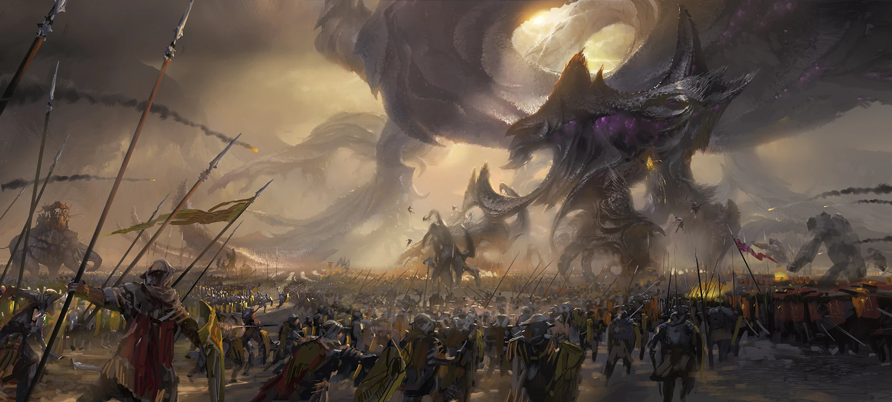
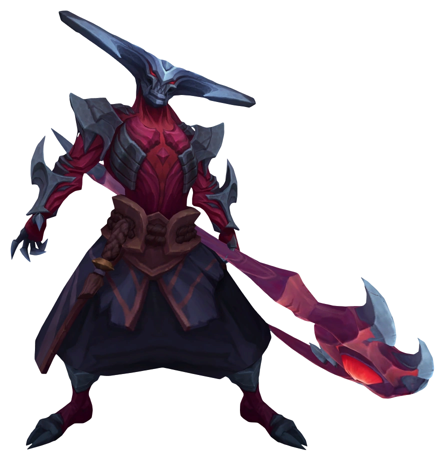
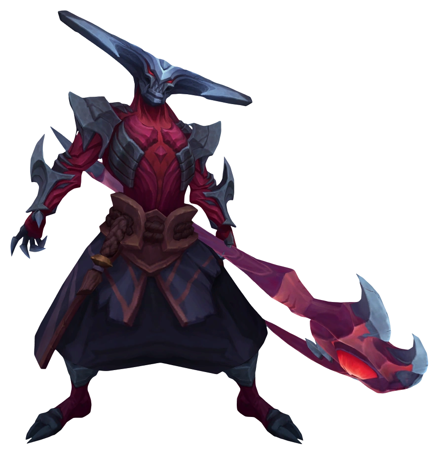

Uma lenda sombria de uma era passada, os darkin são armas vivas que acabarão por corromper e consumir qualquer um que tentar empunhá-las. Grandes guerreiros do passado, eles foram enganados e aprisionados dentro das espadas e arcos que carregavam em batalha e escondidos para que nunca pudessem ameaçar o reino mortal novamente. Mas em meio aos eventos cataclísmicos das Guerras Rúnicas, a verdadeira origem dos darkin — e a ameaça que eles representavam para toda a vida em Runeterra — foi em grande parte esquecida.
Nos séculos que se passaram, algumas dessas armas foram redescobertas por indivíduos desavisados ou ambiciosos e já começaram a buscar outros hospedeiros cada vez mais fortes. Um acerto de contas se aproxima, em que os darkin terão sua vingança...
Tudo começou na guerra de shurima contra Icathia
Os darkin são três vezes amaldiçoados; uma vez pelo antigo inimigo que enfrentaram, outra vez pela queda de seu glorioso império e, por fim, pela traição que os condenou por toda a eternidade.
Quando os rebeldes de Icathia ignorantemente trouxeram o Vazio à batalha, a defesa de Shurima foi comandada, como sempre, pelos lendários Ascendentes. Imbuídos com o poder do Disco Solar, esses "guerreiros-deuses” gigantescos atropelavam soldados mortais, empunhando espadas e magia com a mesma facilidade e, no final, sempre saiam vitoriosos. Mesmo assim, os horrores da guerra custaram caro e aqueles que a sobreviveram a ela talvez nunca tenham voltado a ser como eram antes.
Séculos depois, com a perda do poderoso Azir no exato momento de sua própria Ascensão, Shurima caiu. Embora aparentemente imortais, os guerreiros-deuses haviam primeiro nascido como humanos. Com o passar do tempo, sem nenhum imperador para liderá-los, muitos dos Ascendentes sobreviventes começaram a questionar sua missão, tomados pelas ambições e mesquinharias de outros tempos. Eles aprenderam por conta própria feitiços proibidos e passaram a ver a si mesmos como os legítimos herdeiros do mundo. A escassa população mortal restante chamou esses novos tiranos de darkin, uma maldição sussurrada que se traduz na língua antiga como "os caídos".
Mas nem mesmo os darkin conseguiram fugir da enfermidade da alma que assola a todos que enfrentam o Vazio por tanto tempo. Após séculos de instável aliança, eles inevitavelmente se voltaram uns contra os outros; e assim começou a Grande Guerra dos Darkin.
Um conflito que se espalhou de Shurima a Valoran, e muito além. Os renegados guerreiros-deuses e seus exércitos eram imbatíveis e nações inteiras foram massacradas por eles. Parecia que seria o fim de todas as coisas neste mundo... até que, inesperadamente, os magos de Runeterra aprenderam como deter os últimos darkin. Em segredo e se utilizando de artifícios ardilosos, eles descobriram um jeito de fundir as formas físicas dos Ascendentes com o poder celestial de seus corações, e o resultado disso podia ser aprisionado nas armas que eles carregavam. Com seus líderes trancafiados para sempre, as violentas hordas foram destruídas e exterminadas.
Essas armas darkin foram escondidas, muitas delas cuidadosamente guardadas pelas civilizações mortais que surgiram após a guerra, pois estava claro que tal poder poderia ser aprisionado, mas nunca destruído. E, se tal poder cair em mãos erradas, os darkin certamente se erguerão novamente.
Os campeões Darkin presentes no jogo League of Legends(lol) atualmente(20/02/2024) são: Aatrox, Kayn(ele não é um darkin mas ele porta o Rhaast que é um darkin),Varus e a ultima adição ao jogo Naafiri
 
